image_tagメソッドを使ったイメージタグの作成
テンプレートで画像を表示するための<img>タグを作成する方法として、image_tagメソッド使用する方法について解説します。
1.image_tagメソッドの定義
2.画像の設置場所とパスの指定方法
3.画像サイズの指定
4.マウスオーバー時の画像を指定
5.画像に対してリンクを設定
image_tagメソッドの定義
image_tagメソッドはActionView::Helpers::AssetTagHelperクラスで次のように定義されています。
image_tag(source, options = {})
メソッドの引数には、必須の引数として画像ファイルを指定します。またオプションとしてalt属性や画像のサイズ、そしてマウスオーバーの時の画像を指定することができます。
画像の設置場所とパスの指定方法
アプリケーションの中で使用される画像ファイルの設置場所として、現在は2つの場所が使われているようです。1つ目は「app/assets/images」ディレクトリです。(デフォルトで画像ファイルが1つ設置されています)。
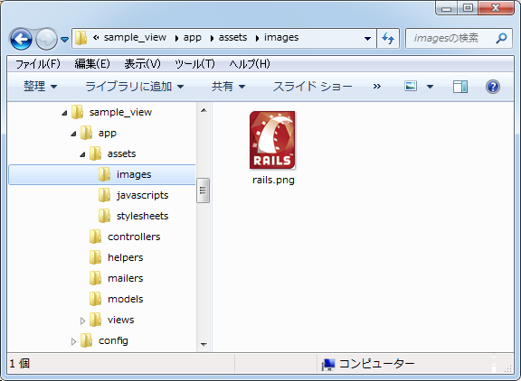
image_tagメソッドの1番目の引数に単に画像ファイル名を指定した場合は、このディレクトリに設置されたものとしてタグが出力されます。(「app/assets/images」ディレクトリに配置した画像ファイルは「/assets/画像ファイル名」で参照できるようになります)。
<%= image_tag 'flower.png' %> --> <img alt="Flower" src="/assets/flower.png" />
この時、alt属性を明示的に指定していなかった場合は、画像ファイル名の先頭を大文字にして拡張子の部分を取り除いたものがalt属性の値として自動的に設定されます。
もう1つは公開用のHTMLページなどを設置する「public」ディレクトリ内です。下記は「public」ディレクトリ内に画像ファイルを設置するための「images」ディレクトリを後から作成しました。「public」ディレクトリ直下でも構いませんし、別のディレクトリを作成されても結構です。
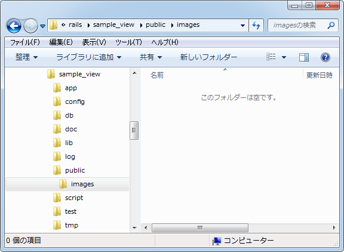
「public」ディレクトリ以下に画像ファイルを設置した場合は、image_tagメソッドの1番目の引数に「/flower.png」や「/images/flower.png」のようにルートディレクトリからのパス付きでファイル名を指定して下さい。
「public」ディレクトリ直下に画像ファイルを設置した場合: <%= image_tag '/flower.png' %> --> <img alt="Flower" src="/flower.png" /> 「public/images」ディレクトリに画像ファイルを設置した場合: <%= image_tag '/images/flower.png' %> --> <img alt="Flower" src="/images/flower.png" />
alt属性については先程と同じです。
「alt」オプションを使うことで明示的にalt属性に値を設定することもできます。
<%= image_tag 'flower.png' %>, :alt => 'Flower Photo' --> <img alt="Flower Photo" src="/assets/flower.png" />
では実際に簡単な例で確認してみます。「books」コントローラに「show」アクションを作成します。
class BooksController < ApplicationController def show end end
次に「books」コントロールの「show」アクションから呼び出されるテンプレートとして「app/views/books/show.html.erb」ファイルを作成し、次のように記述しました。
<p> Welcome to Show Page </p> <p> <%= image_tag 'circle_btn.png', :alt => '登録ボタン' %> </p> <p> <%= image_tag '/images/box_btn.png' %> </p>
ルーティングの設定として「config/routes.rb」ファイルを次のように記述しました。
SampleView::Application.routes.draw do get "books/show" end
画像ファイル「circle_btn.png」を「app/assets/images/」ディレクトリに配置し、画像ファイル「box_bnt.png」を「public/images」ディレクトリに配置しました。
ではアプリケーションを起動し「books」コントロールの「show」アクションを呼び出してみます。すると次のように結果がブラウザに表示されました。
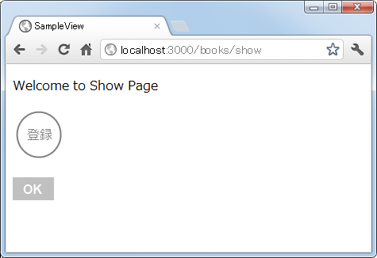
ソースを確認してみると次にように出力されていることが確認できます。
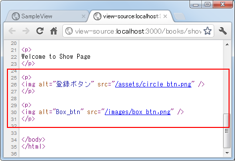
このようにimage_tagメソッドを使うことで画像タグを簡単に出力することができます。
画像サイズの指定
「size」オプション又は「width」オプションと「height」オプションを使用することでwidth属性とheight属性に値を設定することができます。
幅と高さをまとめて指定: <%= image_tag 'flower.png', :size => '30x20' %> --> <img alt="Flower" height="20" src="/assets/circle_btn.png" width="30" /> 幅と高さを別々に指定: <%= image_tag 'flower.png', :width => '40', :height => '10' %> --> <img alt="Flower" height="10" src="/assets/circle_btn.png" width="40" />
幅と高さをまとめて指定する場合は「幅x高さ」の形式で値を指定して下さい。
では実際に簡単な例で確認してみます。「show」アクションから呼び出されるテンプレートの「app/views/books/show.html.erb」ファイルを次のように変更しました。
<p> Welcome to Show Page </p> <p> <%= image_tag 'btn.png', :size => '69x37' %> </p> <p> <%= image_tag 'btn.png', :width => '138', :height => '37' %> </p>
ではアプリケーションを起動し「books」コントロールの「show」アクションを呼び出してみます。すると次のように結果がブラウザに表示されました。
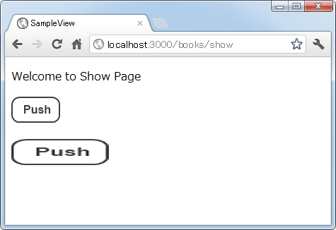
ソースを確認してみると次にように幅と高さが指定されて出力されていることが確認できます。
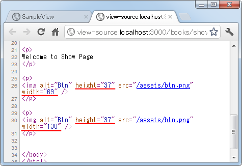
マウスオーバー時の画像を指定
メニューなどで画像にマウスを載せたときに表示される画像を変更することがよく行われていますが、「mouseover」オプションを使うことで簡単に実現することが可能です。
<%= image_tag 'btn.png', :mouseover => 'btn_over.png' %>
--> <img alt="Btn" onmouseout="this.src='/assets/btn.png'"
onmouseover="this.src='/assets/btn_over.png'" src="/assets/btn.png" />
画像がマウスに乗った時の画像ファイルを「mousuover」オプションで指定すると、onmouseout属性とonmouseout属性が設定されて出力されます。
では実際に簡単な例で確認してみます。「show」アクションから呼び出されるテンプレートの「app/views/books/show.html.erb」ファイルを次のように変更しました。
<p> Welcome to Show Page </p> <p> <%= image_tag 'btn.png', :mouseover => 'btn_over.png' %> </p>
ではアプリケーションを起動し「books」コントロールの「show」アクションを呼び出してみます。すると次のように結果がブラウザに表示されました。
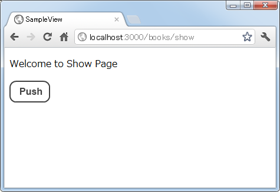
画像にマウスを合わせて頂くと、次のように違う画像が表示されます。
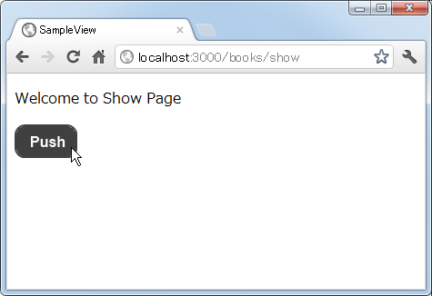
ソースを確認してみると次にように出力されていることが確認できます。
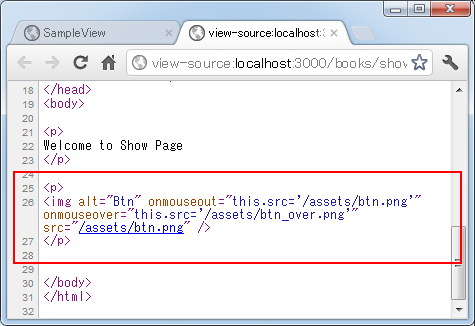
このように簡単にマウスオーバー時の画像を指定することが可能です。
画像に対してリンクを設定
「link_toメソッド」を使うことでリンクを出力することができますが、リンクを設定する文字列を指定する場所にimage_tagメソッドを記述することで画像に対してリンクを設定することができます。
<%= link_to image_tag('btn.png'), '/books/index' %>
--> <a href="/books/index"><img alt="Btn" src="/assets/btn.png" /></a>
image_tagメソッドで出力されたものはエスケープは行われませんので、そのまま記述してもらうだけで画像に対するリンクを設定することができます。
では実際に簡単な例で確認してみます。「show」アクションから呼び出されるテンプレートの「app/views/books/show.html.erb」ファイルを次のように変更しました。
<p>
Welcome to Show Page
</p>
<p>
<%= link_to image_tag('btn.png'), '/books/index' %>
</p>
またリンク先である「index」アクションから呼び出されるテンプレートの「app/views/books/index.html.erb」ファイルを次のように作成しました。
<p> Welcome to Index Page </p>
ルーティングの設定として「config/routes.rb」ファイルに「index」アクション用のルーティングを追加しました。
SampleView::Application.routes.draw do get "books/show" get "books/index" end
ではアプリケーションを起動し「books」コントロールの「show」アクションを呼び出してみます。すると次のように結果がブラウザに表示されました。
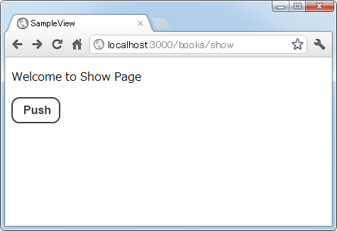
ソースを確認してみると次にようにイメージタグに対してリンクが設定されて出力されていることが確認できます。
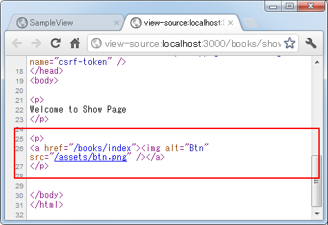
また画像をクリックすると「index」アクションが呼び出されて次のようにブラウザに表示されます。
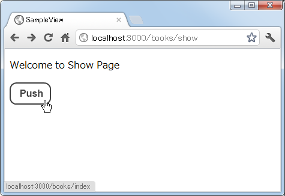
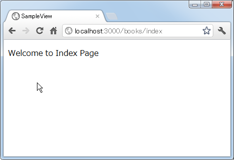
このようにlink_toメソッドとimage_tagメソッドを組み合わせることで、簡単に画像に対してリンクを設定することができます。
( Written by Tatsuo Ikura )

著者 / TATSUO IKURA
初心者～中級者の方を対象としたプログラミング方法や開発環境の構築の解説を行うサイトの運営を行っています。